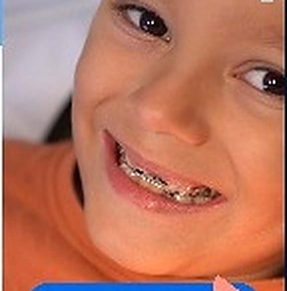
Ortodontia
Aparelho fixo, Invisalign/alinhadores e moldeiras personalizadas para todas as idades.
Odontologia para toda a família — ortodontia, odontopediatria, clareamento e estética com técnica, escuta e carinho. É assim que a Leve cuida do seu sorriso.
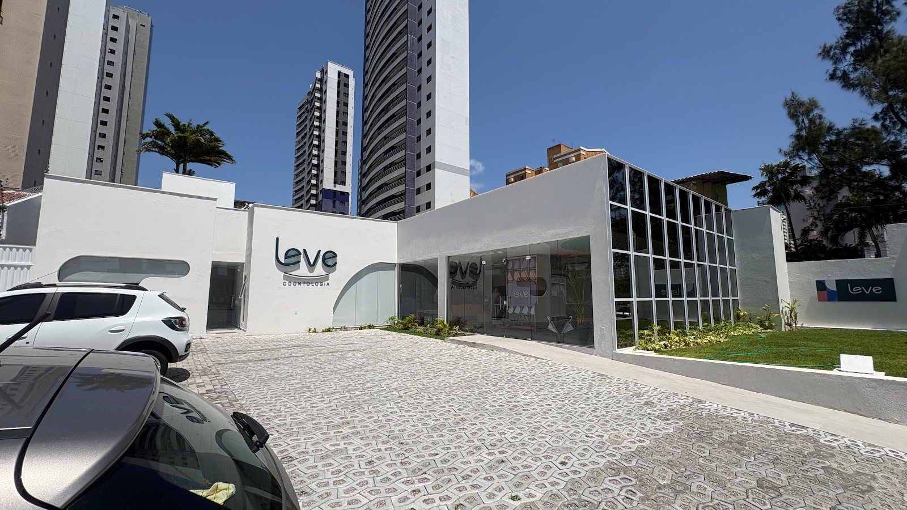
A Leve nasceu para tirar o peso da ida ao dentista. Um atendimento próximo, humano e sem jargão técnico excessivo — pensado para famílias inteiras, das crianças aos avós, do primeiro check-up ao tratamento ortodôntico completo.
"Leve é a experiência que reflete no sorriso."
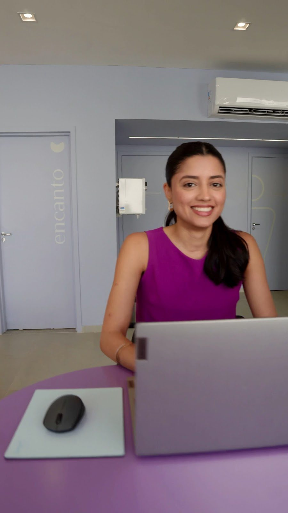
Para cada fase, um cuidado Leve com o seu sorriso — do primeiro dente de leite ao tratamento ortodôntico na fase adulta.

Aparelho fixo, Invisalign/alinhadores e moldeiras personalizadas para todas as idades.
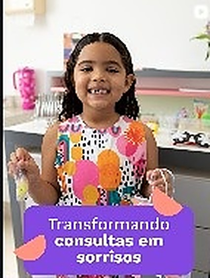
Consultas pensadas para deixar crianças confortáveis desde a primeira visita.
Procedimento clínico para um sorriso mais claro, com acompanhamento profissional.
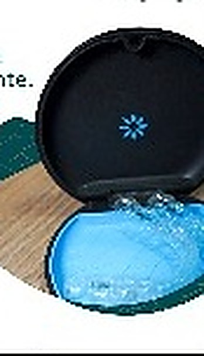
Scanner intraoral para um diagnóstico transparente, com resultado visível.
Harmonização e procedimentos estéticos para complementar o cuidado com o sorriso.
Acompanhamento periódico para manter a saúde bucal de toda a família em dia.
Ficou com dúvida sobre qual tratamento é o seu? Tirar dúvida pelo WhatsApp
Ambiente moderno, arejado e pensado no detalhe — da fachada à sala de espera — para que a visita à Leve seja, de fato, leve.
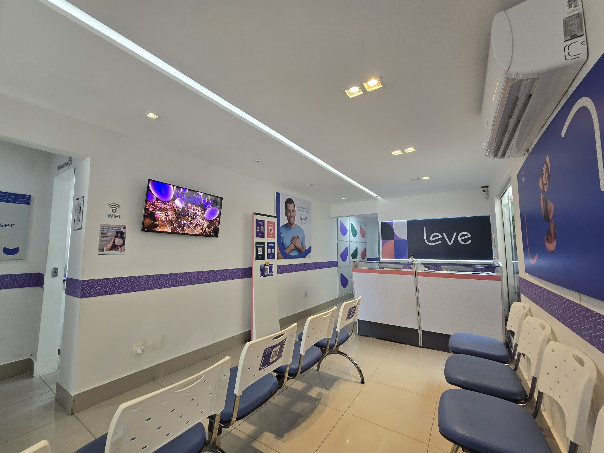
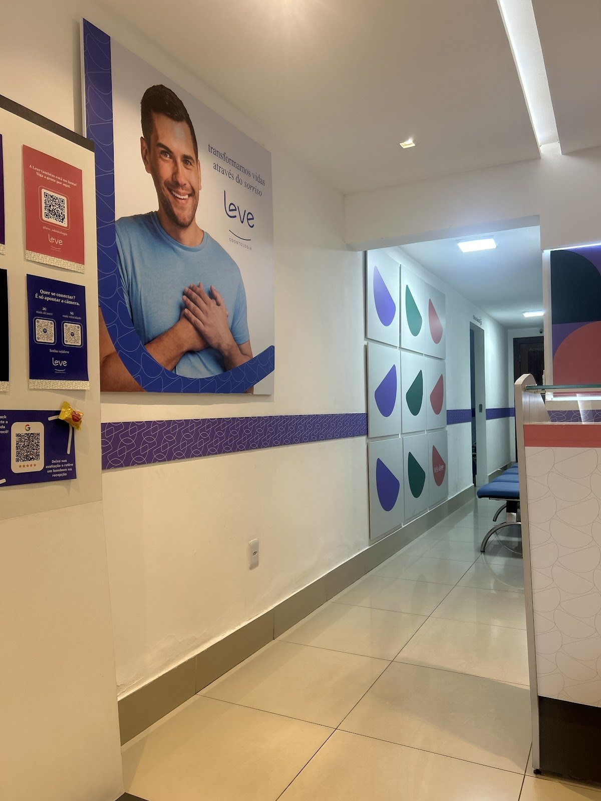
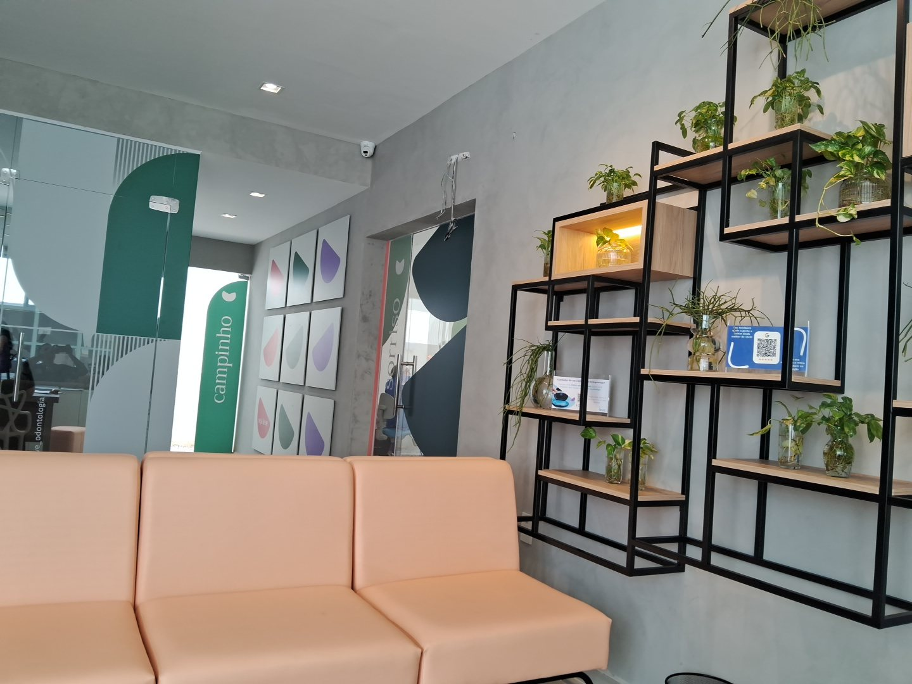
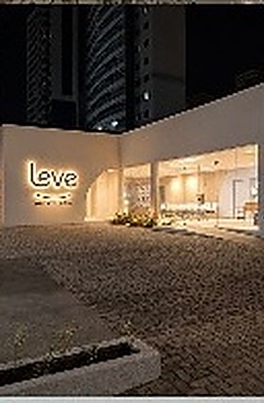
Uma área pensada para tirar o medo do consultório: brinquedos, cores e uma equipe treinada para transformar consultas em sorrisos desde a primeira visita.
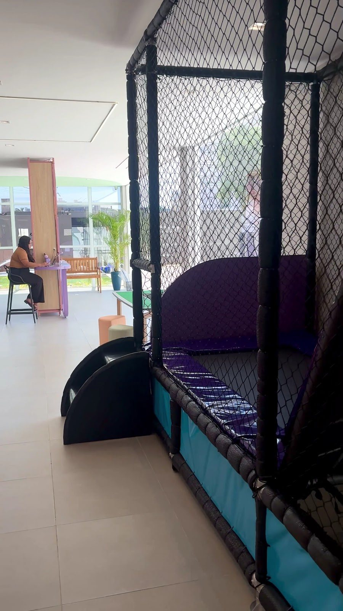
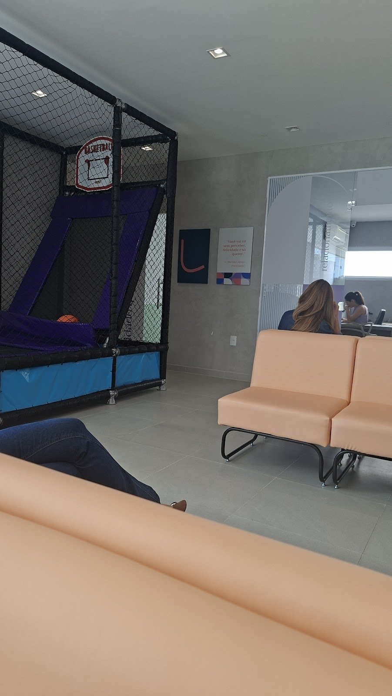
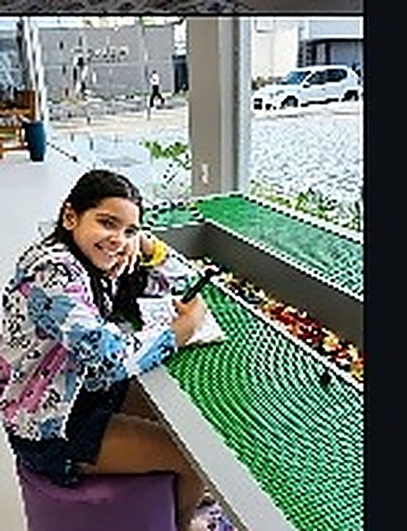
Profissionais que cuidam com técnica, escuta e carinho — essa é a frase que resume como a equipe Leve trabalha todos os dias.
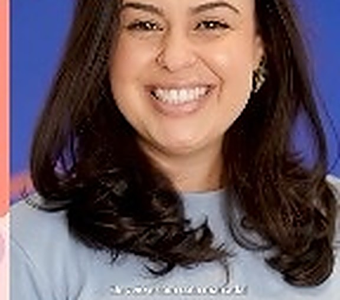
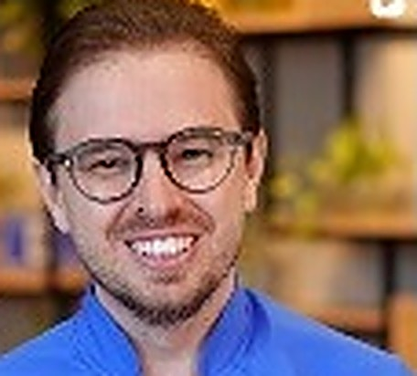
Grafia do nome a confirmar com a clínica antes da publicação final.
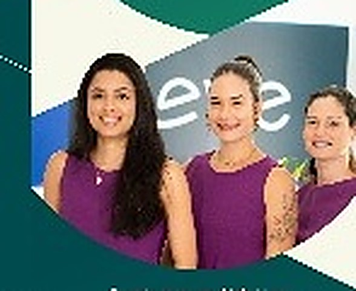
Nomes e cargos completos a confirmar com a clínica.
Esta seção reúne apenas profissionais identificados com clareza no material da clínica. Nomes, CROs e cargos completos da equipe de apoio devem ser confirmados diretamente com a clínica antes do lançamento oficial do site.
Veja o antes e depois de quem decidiu sorrir com leveza — direto do Instagram @leve_odontologia.
"Sorriso cuidado com carinho."
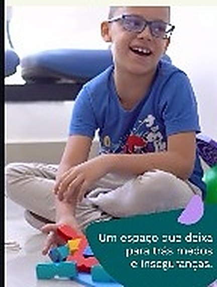
Publicação @leve_odontologia"Invisalign na Leve por quem viveu essa experiência."
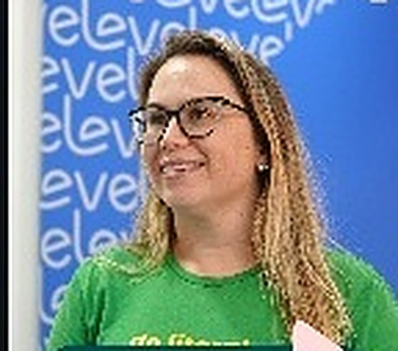
Publicação @leve_odontologia"Boa tarde, clínica está super linda, aconchegante, localização bem acessível."
Medo do dentista? Com a Leve, não. A ideia aqui é ir com calma: explicar cada etapa antes de fazer, sem pressa — vale pra você e vale ainda mais para os pequenos.
Sim, e é uma das coisas que a Leve mais gosta de fazer. A odontopediatria tem uma área kids só dela, pensada para a criança se sentir em casa desde a primeira visita.
Ortodontia (aparelho fixo, Invisalign/alinhadores e moldeiras personalizadas), odontopediatria, clareamento dental, procedimentos estéticos, tecnologia digital com scanner intraoral, limpeza e acompanhamento.
Queremos ser transparentes sobre isso antes de você agendar. [INSERIR DADO REAL DO CLIENTE] — quais convênios são aceitos, se houver.
Cada sorriso pede um plano diferente, então preferimos combinar isso com calma pelo WhatsApp. [INSERIR DADO REAL DO CLIENTE] — valores de consulta/avaliação e política de orçamento.
Queremos que sua primeira visita seja tranquila, sem pressa, começando por uma boa conversa sobre o que você sente e o que espera do tratamento. [INSERIR DADO REAL DO CLIENTE] — etapas e duração da primeira avaliação.
Segunda a sexta, das 8h às 18h. Sábado, das 8h às 13h. Fechado aos domingos.
Fale agora pelo WhatsApp — é o canal oficial da Leve para agendamentos.
Sem formulários longos — clique e fale direto com a equipe Leve pelo WhatsApp.
Agendar pelo WhatsApp